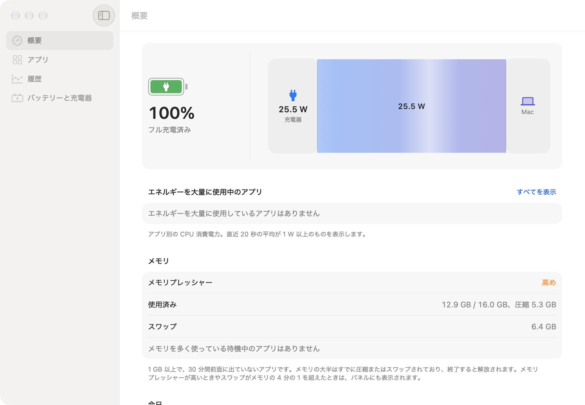
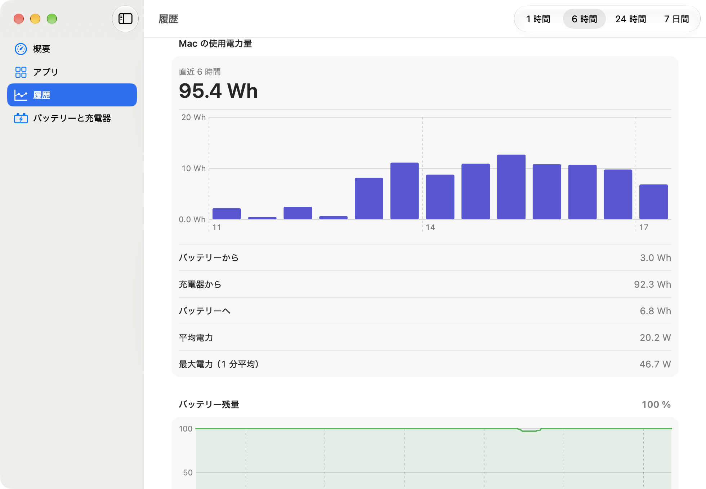

MacBookのためのオープンソース電力モニター
電力の行き先が、見える。
充電器、バッテリー、Mac。2秒ごとに、メニューバーで。
MacBookのためのオープンソース電力モニター
充電器、バッテリー、Mac。2秒ごとに、メニューバーで。

RillはMacBook用の無料・オープンソースのメニューバーAppです。充電器が供給する電力、Macが使う電力、バッテリーに出入りする電力をリアルタイムにW単位で表示します。電力を多く使うAppを一覧にし、メモリプレッシャーを見守り、7日間の履歴を残します。macOSが標準で提供するデータだけを読み、特別な権限は不要。ネットに接続するのはアップデートを確認するときだけです。
アクティビティモニタも、当て推量も、もういらない。
電源接続中は充電器の入力を、バッテリー駆動中は放電量を表示。
充電器、バッテリー、Macの間で電力がどう分かれるか。帯の太さがW数です。
App別のエネルギー、CPU、メモリ。応答しないAppを見つけて終了できます。
メモリプレッシャーとスワップがひと目でわかる。メモリが足りなくなると、大量のメモリを抱えたまま使われていないAppを一覧表示します。
1日ごとの使用電力量に加え、電力、充電残量、バッテリー温度の推移。
バッテリーの状態、充放電回数、充電器の定格、ネゴシエートされた電圧、対応するUSB-C PDレベル。
1時間から7日間まで。期間ごとの使用電力量を表示し、ポインタを合わせると詳細を確認できます。

ターミナルで1行実行するだけ。スクリプトが署名を確認し、Rillを「アプリケーション」に入れます。
curl -fsSL https://raw.githubusercontent.com/chengffei/rill/main/install.sh | bashまたはディスクイメージをダウンロードして手動でインストール：
ディスクイメージを開き、Rillを「アプリケーション」フォルダにドラッグします。
Rillをダブルクリック。macOSが開発元を検証できないと表示したら、「完了」をクリックします。
「システム設定 › プライバシーとセキュリティ」で下までスクロールし、「このまま開く」をクリックします。
macOS 26以降、バッテリー搭載のAppleシリコン搭載Macが必要です。アイコンが表示されない場合は、メニューバー管理Appに隠されている可能性があります。
Rillのインストールと使い方についてのよくある質問。
Rillをインストールしてください。メニューバーにリアルタイムのW数が表示され、パネルでは充電器の入力、バッテリーの充放電、Mac本体の消費に分けて2秒ごとに更新します。
いいえ。macOSがすべてのAppに提供している電力センサーとバッテリーのデータ、そしてあなた自身のプロセスのエネルギーを読み取るだけです。
いいえ。Rillは今起きていることを表示するだけで、Macの充電方法は一切変えません。
メモリクリーナーは実行しません。メモリが足りなくなると、大量のメモリを使っているのに30分間使われていないAppを表示するので、終了するかどうかを選べます。実際にメモリを解放するのは、Appを終了することです。
はい。RillはGPL-3.0のもとで公開されている、無料のオープンソースソフトウェアです。
RillはAppleの公証を受けていません。ターミナルのコマンドでインストールすれば警告は出ません。または一度Appを開いて警告を閉じ、「システム設定 › プライバシーとセキュリティ」で「このまま開く」をクリックしてください。
いいえ。履歴はあなたのMacに30日間保存されるだけです。Rillがネットに接続するのは「アップデートを確認」を選んだときだけです。